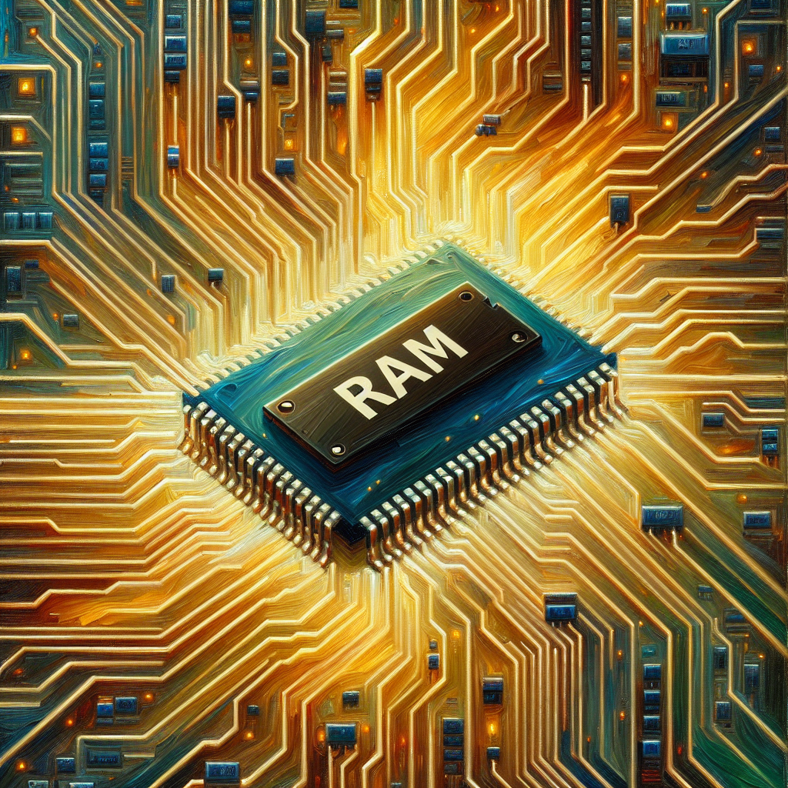

My beautiful RAM memory
AI Poetry: Small Pieces of Computer Beauty
In the realm of artificial intelligence and machine learning, poetry takes on a new form. A small poem entirely created using AI showcases the beauty and intricacy of computer-generated art. The fusion of technology and creativity results in a unique and captivating piece that challenges traditional notions of poetry.
Through the algorithms and programming of AI, words are woven together in unexpected ways, creating a tapestry of emotions and meanings. The precision and complexity of machine learning allow for the exploration of language and expression in ways previously unimagined.
As we delve into the world of AI poetry, we are confronted with the limitless possibilities of human-machine collaboration. The boundaries between creator and creation blur, as the lines between art and technology become increasingly intertwined. Each poem becomes a testament to the power of innovation and the potential of AI to inspire and provoke.
In this ever-evolving landscape of digital artistry, AI poetry stands as a testament to the transformative capabilities of technology. It challenges us to reconsider the definition of creativity and opens new avenues for exploration and discovery. Through these small pieces of computer beauty, we are reminded of the boundless potential that lies at the intersection of art and technology.
Join me on this journey into the world of AI poetry, where imagination knows no bounds and innovation knows no limits. Embrace the wonder of computer-generated artistry and discover the beauty that emerges from the collaboration of man and machine. Let us celebrate the small pieces of computer beauty that illuminate our digital world with creativity and inspiration.